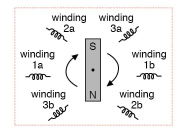
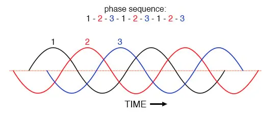
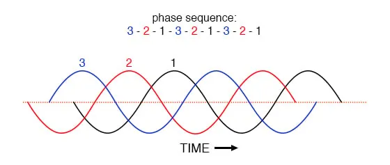
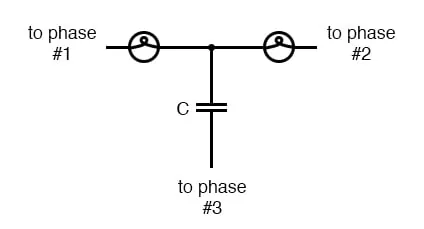
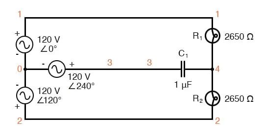
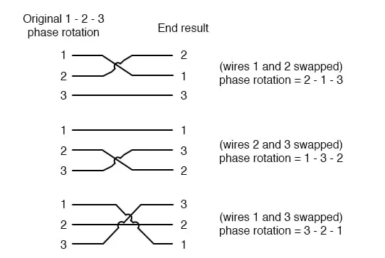

Let’s take the three-phase alternator design laid out earlier and watch what happens as the magnet rotates.

Three-phase alternator
The phase angle shift of 120° is a function of the actual rotational angle shift of the three pairs of windings.
If the magnet is rotating clockwise, winding 3 will generate its peak instantaneous voltage exactly 120° (of alternator shaft rotation) after winding 2, which will hit its peak 120° after winding 1. The magnet passes by each pole pair at different positions in the rotational movement of the shaft.
Where we decide to place the windings will dictate the amount of phase shift between the windings’ AC voltage waveforms.
If we make winding 1 our “reference” voltage source for phase angle (0°), then winding 2 will have a phase angle of -120° (120° lagging, or 240° leading) and winding 3 an angle of -240° (or 120° leading).
This sequence of phase shifts has a definite order. For clockwise rotation of the shaft, the order is 1-2-3 (winding 1 peak first, them winding 2, then winding 3). This order keeps repeating itself as long as we continue to rotate the alternator’s shaft.

Clockwise rotation phase sequence: 1-2-3.
However, if we reverse the rotation of the alternator’s shaft (turn it counter-clockwise), the magnet will pass by the pole pairs in the opposite sequence. Instead of 1-2-3, we’ll have 3-2-1. Now, winding 2’s waveform will be leading 120° ahead of 1 instead of lagging, and 3 will be another 120° ahead of 2. (Figure below)

Counterclockwise rotation phase sequence: 3-2-1.
The order of voltage waveform sequences in a polyphase system is called phase rotation or phase sequence. If we’re using a polyphase voltage source to power resistive loads, phase rotation will make no difference at all. Whether 1-2-3 or 3-2-1, the voltage and current magnitudes will all be the same.
There are some applications of three-phase power, as we will see shortly, that depend on having phase rotation being one way or the other.
Since voltmeters and ammeters would be useless in telling us what the phase rotation of an operating power system is, we need to have some other kind of instrument capable of doing the job.
One ingenious circuit design uses a capacitor to introduce a phase shift between voltage and current, which is then used to detect the sequence by way of comparison between the brightness of two indicator lamps in the figure below.

Phase sequence detector compares the brightness of two lamps.
The two lamps are of equal filament resistance and wattage. The capacitor is sized to have approximately the same amount of reactance at system frequency as each lamp’s resistance.
If the capacitor were to be replaced by a resistor of equal value to the lamps’ resistance, the two lamps would glow at equal brightness, the circuit is balanced. However, the capacitor introduces a phase shift between voltage and current in the third leg of the circuit equal to 90°.
This phase shift, greater than 0° but less than 120°, skews the voltage and current values across the two lamps according to their phase shifts relative to phase 3.
The following SPICE analysis, “phase rotation detector—sequence = v1-v2-v3,” demonstrates what will happen: (Figure below)

SPICE circuit for phase sequence detector.
phase rotation detector -- sequence = v1-v2-v3 v1 1 0 ac 120 0 sin v2 2 0 ac 120 120 sin v3 3 0 ac 120 240 sin r1 1 4 2650 r2 2 4 2650 c1 3 4 1u .ac lin 1 60 60 .print ac v(1,4) v(2,4) v(3,4) .end freq v(1,4) v(2,4) v(3,4) 6.000E+01 4.810E+01 1.795E+02 1.610E+02
The resulting phase shift from the capacitor causes the voltage across phase 1 lamp (between nodes 1 and 4) to fall to 48.1 volts and the voltage across phase 2 lamp (between nodes 2 and 4) to rise to 179.5 volts, making the first lamp dim and the second lamp bright.
Just the opposite will happen if the phase sequence is reversed: “phase rotation detector—sequence = v3-v2-v1“
phase rotation detector -- sequence = v3-v2-v1 v1 1 0 ac 120 240 sin v2 2 0 ac 120 120 sin v3 3 0 ac 120 0 sin r1 1 4 2650 r2 2 4 2650 c1 3 4 1u .ac lin 1 60 60 .print ac v(1,4) v(2,4) v(3,4) .end freq v(1,4) v(2,4) v(3,4) 6.000E+01 1.795E+02 4.810E+01 1.610E+02
Here, (“phase rotation detector—sequence = v3-v2-v1”) the first lamp receives 179.5 volts while the second receives only 48.1 volts.
We’ve investigated how phase rotation is produced (the order in which pole pairs get passed by the alternator’s rotating magnet) and how it can be changed by reversing the alternator’s shaft rotation.
However, the reversal of the alternator’s shaft rotation is not usually an option open to an end-user of electrical power supplied by a nationwide grid (“the” alternator actually being the combined total of all alternators in all power plants feeding the grid).
There is a much easier way to reverse phase sequence than reversing alternator rotation: just exchange any two of the three “hot” wires going to a three-phase load.
This trick makes more sense if we take another look at a running phase sequence of a three-phase voltage source:
1-2-3 rotation: 1-2-3-1-2-3-1-2-3-1-2-3-1-2-3 . . . 3-2-1 rotation: 3-2-1-3-2-1-3-2-1-3-2-1-3-2-1 . . .
What is commonly designated as a “1-2-3” phase rotation could just as well be called “2-3-1” or “3-1-2,” going from left to right in the number string above? Likewise, the opposite rotation (3-2-1) could just as easily be called “2-1-3” or “1-3-2.”
Starting out with a phase rotation of 3-2-1, we can try all the possibilities for swapping any two of the wires at a time and see what happens to the resulting sequence in the figure below.

All possibilities of swapping any two wires.
No matter which pair of “hot” wires out of the three we choose to swap, the phase rotation ends up being reversed (1-2-3 gets changed to 2-1-3, 1-3-2 or 3-2-1, all equivalent).
REVIEW: